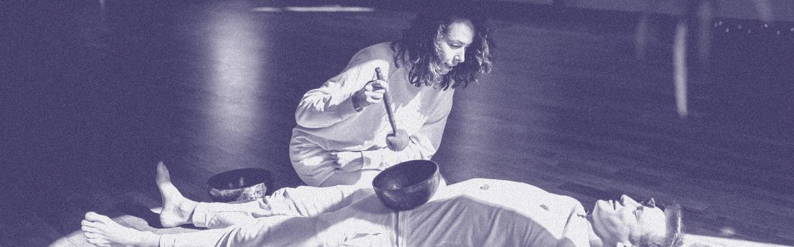
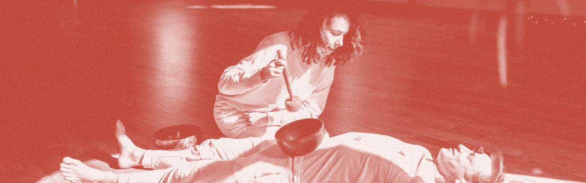

Sound baths in Denver & the Front Range
This week on the Front Range: 59 sound baths, 40 in Denver, 4 in Boulder, 9 in Fort Collins, and 6 in Colorado Springs, priced free to $130.
Last updated September 7, 2026.
Tonight
Monday, September 7 · 2 sessionsFriday, September 11
7 sessionsSaturday, September 12
7 sessionsSunday, September 13
15 sessionsSundays of Sound -Mind Body Reset Gong Journey
Sunday Morning of Sound Gong Journey - Horsetooth Reservoir
Little Souls Sound Bath
Little Souls Sound Bath
NLP Soundbath Experience
Community Sound Bath: Relax, Rest and Reset
Restorative Yoga, SoundBath & IV Experience
Colorado Salt Cave w/Sound Healing
Fall Equinox Snip & Sound
Energy Healing + Sound Bath Immersion
Microd0se Soundbath w/ Mary
Mind-Body Moon Circle
Sound Bath at Wash Park - Yoga in the Park Series
Salt Cave Sound Concert
Weekly Sound Bath & Meditation with Joe


First time? What to expect at a sound bathTuesday, September 8
6 sessionsWednesday, September 9
12 sessionsMidweek Harmony Reset - Sound Bath
Community Sound Bath
FREE Sound Healing in the Park | Lakewood, CO
Sunset Yoga at Cheesman Park Pavilion with Live Music
Floating Sound Bath – Elise Nicole
Vibe, check Sound Bath
Soundscape of Light-Courage
Wednesday Meditation
Soundscape of Light-Slow Down
Toning and Crystal Bowl Sound Bath
Soundscape of Light - Slow Down
Gong Journey
Thursday, September 10
9 sessionsCandlelight Yoga Nidra & Sound Bath
Thursday Mind Body Reset — Gong Journey
Thursday's Weekly Gong Journey
Unseen & Rooted
Sound Bath Ceremony
Autumn Whispers | An Evening of Gentle Reflection, Sound & Mindful Letting Go
New Moon Envisioning ~ Sound Healing Journey
New Moon Soundbath
Grounding Thursdays @ Rooted Heart
Monday, September 14
1 sessionMonday, September 14
1 sessionTuesday, September 15
1 sessionWednesday, September 16
7 sessionsThursday, September 17
3 sessionsFriday, September 18
7 sessionsHealing Sound Bath Meditation for Cancer Patients (11:00 AM session)
Sacred Liberation: A Colorado Women's Micro Retreat
Sound Circle & Energy Healing Sound Bath with Bruce White
Illuminated Sound Journey
Release and Renew: Guided Meditation and Sound Healing Immersion
Vagus Nerve Activation Sound Bath – Reconnect with Inner Peace
Reiki & Sound Bath feat. Megan & Valeria
Saturday, September 19
11 sessionsSound Bath for Stress Relief + Energy Clearing
Sound Bath for Stress Relief + Energy Clearing
Sound Bath for Stress Relief + Energy Clearing (Baker | WashPark Denver)
Saturday Morning Sound Bath
Massage & Sound Healing Integration Session
Private 1-2-1 Massage and Sound Healing Package
In-Person Sum Faht Taoist Qigong, Meditation and Singing Plant Sound Bath
Yoga Nidra Journey in the Salt Cave
Wash Park Psychic Sound Bath
Psychic Sound Bath
Autumnal Equinox Gong Bath w/ Gregg Wilkins
Sunday, September 20
5 sessionsMonday, September 21
2 sessionsTuesday, September 22
6 sessionsWednesday, September 23
7 sessionsThursday, September 24
5 sessionsFriday, September 25
5 sessionsSaturday, September 26
5 sessionsSunday, September 27
9 sessionsSeptember Yoga and Sound Bath by the Creek
Sound Bath: Sacred Rest Ritual
NLP Soundbath Experience
Monthly Moments of Peace Community Sound Bath
Sound Bath for Stress Relief + Energy Clearing
Havest Full Moon in Aries Sound Bath
Sunday Night Reset: Yoga + Sound Healing
Sunday Evening of Sound Gong Journey - Horsetooth Reservoir
Sound Healing Dreamscape Concert in a Cave
No sessions match those filters.
Common questions
What is a sound bath?
A sound bath is a session where you lie down, usually on a mat, while a facilitator plays instruments such as gongs, singing bowls, and chimes. Most run 45 to 75 minutes, and you stay clothed and still the whole time. This calendar also covers close relatives like gong baths, breathwork with sound, and guided meditations played on live instruments.
How much do sound baths cost on the Front Range?
Most sessions in Denver, Boulder, Fort Collins, and Colorado Springs run between $20 and $55. Some are offered by donation or free. Each listing shows its own price, and the ticket link goes straight to the organizer.
What should I bring to a sound bath?
Wear clothes you can lie down in. Many rooms provide mats, bolsters, and blankets, though your own blanket, a pillow, and water are never wrong. When in doubt, ask the organizer what the room supplies.
The week’s sound baths, Thursday mornings.
One email a week: every sound bath on the Front Range calendar for the seven days ahead, grouped by day. Unsubscribe any time.


Running sessions, or have a space that could host one? Add to the calendar.